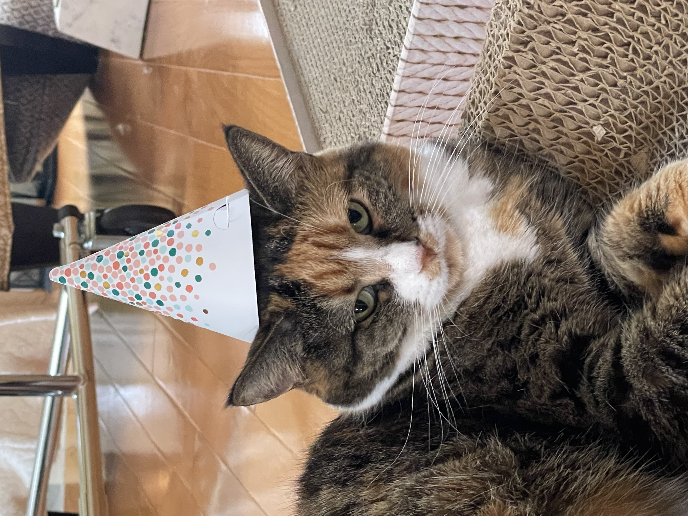
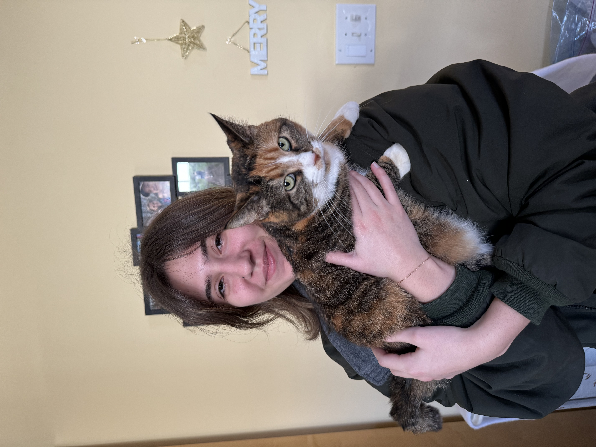
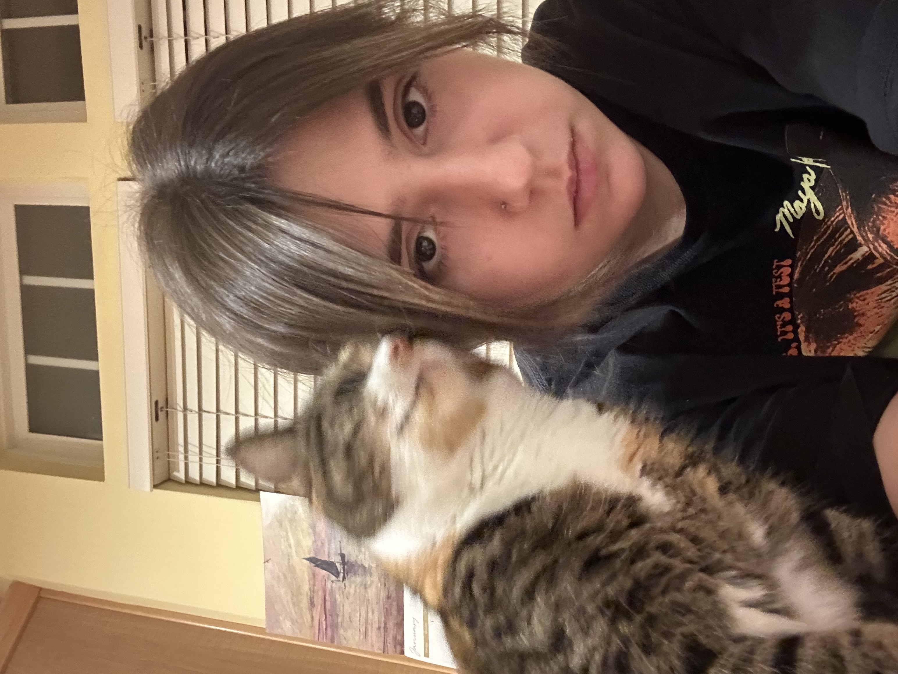
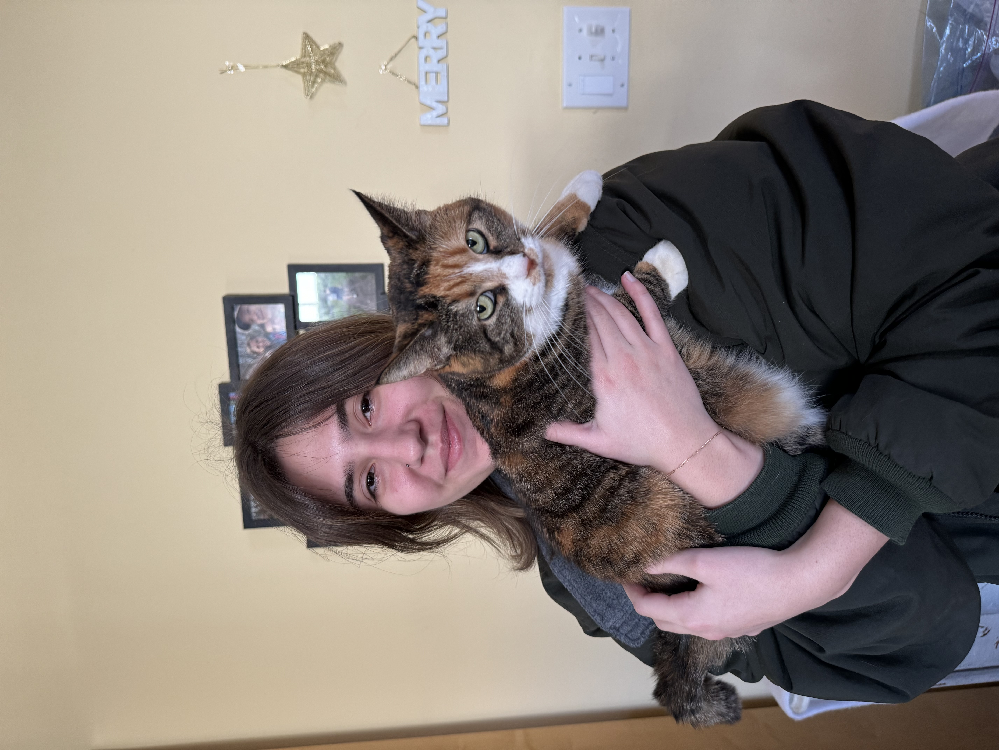
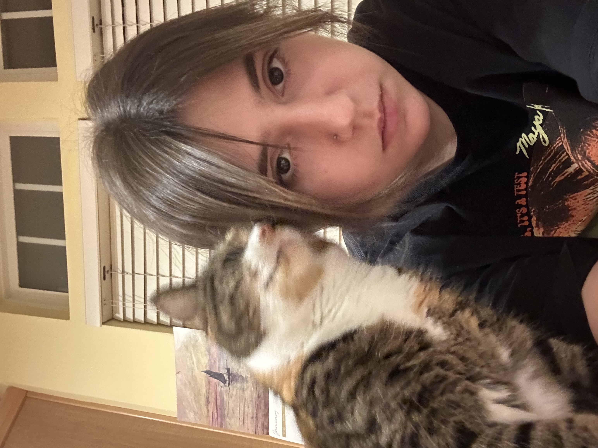

I've had Indigo since March of 2021. I wasn't really a cat person before, but since owning one I've become obsessed with cats.
We both have semptember birthdays
party time!!!!
whenever there is a special event in my household, like a birthday, my mom buys balloons. Indigo just so happens to be obsessed with the ribbon that balloons are tied with and she always tries to eat it, so we have to put the balloons out of her reach. However, my brother and I like to pick her up and hold her in front of the balloons so that she can look at the ribbon/balloons but can't eat them, and this is what we refer to as Supervised Balloon Time.
This is one of my favorite compliments ever. I may be biased... but I think indigo is the cutest cat ever so I love being compared to her. I definitely believe in the phenomenon that owners look like their pets. It's a real thing I swear.
 


